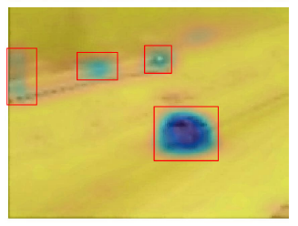
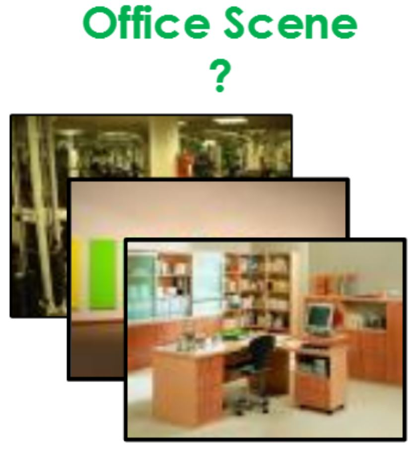
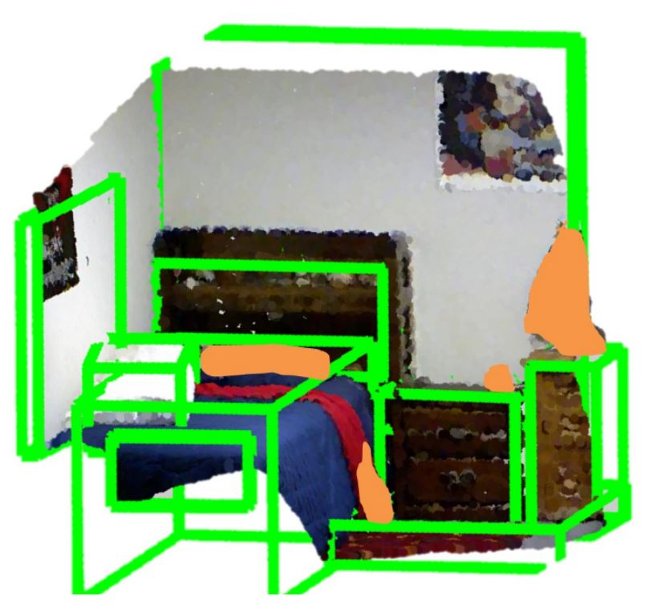
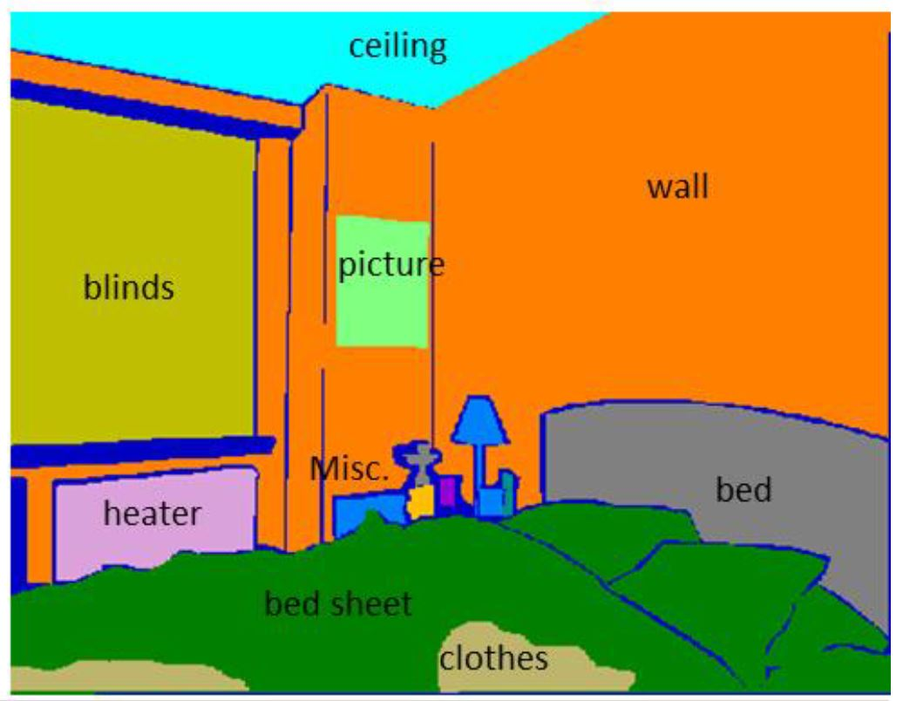
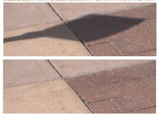
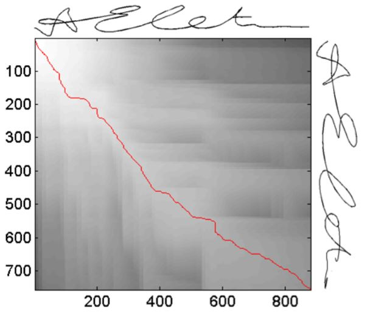
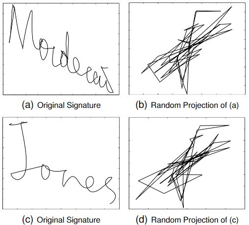

<!doctype html>
<!--[if lt IE 7]><html class="no-js lt-ie9 lt-ie8 lt-ie7" lang="en"> <![endif]-->
<!--[if (IE 7)&!(IEMobile)]><html class="no-js lt-ie9 lt-ie8" lang="en"><![endif]-->
<!--[if (IE 8)&!(IEMobile)]><html class="no-js lt-ie9" lang="en"><![endif]-->
<!--[if gt IE 8]><!--> <html class="no-js" lang="en"><!--<![endif]-->
<head>
{% include _head.html %}
</head>

<body class="page">
<style>
    /*********************************
     The list of publication items
     *********************************/
/* The list of items */
.biblist { }

/* The item */
.biblist li { }

/* You can define custom styles for plstyle field here. */


/*************************************
 The box that contain BibTeX code
 *************************************/
div.noshow { display: none; }
div.bibtex {
	margin-right: 0%;
	margin-top: 1.2em;
	margin-bottom: 1em;
	border: 1px solid silver;
	padding: 0em 1em;
	background: #ffffee;
}
div.bibtex pre { font-size: 75%; overflow: auto;  width: 100%; padding: 0em 0em;}</style>
<script type="text/javascript">
    <!--
    // Toggle Display of BibTeX
    function toggleBibtex(articleid) {
        var bib = document.getElementById('bib_'+articleid);
        if (bib) {
            if(bib.className.indexOf('bibtex') != -1) {
                bib.className.indexOf('noshow') == -1?bib.className = 'bibtex noshow':bib.className = 'bibtex';
            }
        } else {
            return;
        }
    }
-->
    </script>

{% include _browser-upgrade.html %}

{% include _navigation.html %}

{% if page.image.feature %}
  <div class="image-wrap">
  
  {% if page.image.credit %}
    <span class="image-credit">Photo Credit: <a href="{{ page.image.creditlink }}">{{ page.image.credit }}</a></span>
  {% endif %}
  </div><!-- /.image-wrap -->
{% endif %}

<div id="main" role="main">
  <div class="article-author-side">
    {% include _author-bio.html %}
  </div>
  <article>
    <h1>{{ page.title }}</h1>
    <div class="article-wrap">
      {{ content }}

<!----------------------------------------------------------------------------------->
<!-- Generated from JabRef by PubList by Truong Nghiem at 12:49 on 2016.07.15. -->


<!-------------------------------------------------------------------------------------------->
<h4 style="margin-bottom:0px;padding-top:10px;">Change Detection</h4>
<table class="imgtable"><tr><td width="30%">
<a href="../images/ChangeDetection.JPG"></a>&nbsp;</td>
<!-- width="150px" height="120px" -->
<td align="left">
	<p> This project relates to the automatic detection of changes in visual imagery. <i>First</i>, we address the problem of weakly 
	supervised change detection in a pair of color images. Our structured deep learning based approach requires only image-level labels to 
	simultaneously detect and localize changes. <i>Second</i>, we address the forest change detection problem using satellite imagery. 
	Our proposed approach is capable of performing change analysis at a much finer temporal resolution by recovering the missing information
	and automatically learns strong features from the raw surface reflectance data. </p>
</td></tr></table>

<!-------------------------------------------------------------------------------------------------------->
<h4 style="margin-bottom:0px;padding-top:20px;">Scene Categorization</h4>
<table class="imgtable"><tr><td width="30%">
<a href="../images/SceneClassification.JPG"></a>&nbsp;</td>
<!-- width="150px" height="120px" -->
<td align="left">
	<p> This project addresses the challenging problem of scene categorization where diverse intra-class variations and confusing inter-class 
	similarities exist. We develop two novel solutions to solve this problem. <i>First</i>, a new approach is developed which  exploits  rich  mid-level  
	convolutional  features in a transformed domain to   categorize   indoor   scenes.   The feature represenatation not only incorporates the discriminative 
	aspects  of  the  target  dataset,  but  it  also  encodes  the  features  in terms of the general object categories that are present in indoor scenes. 
	<i>Second</i>, we  propose  a  new learnable feature descriptor to  handle  large  scale  deformations  caused  by  spatial  layout  and scale  variations  in  
	indoor  scenes. </p>
</td></tr></table>

<!-------------------------------------------------------------------------------------------->
<h4 style="margin-bottom:0px;padding-top:20px;">Geometry Estimation</h4>
<table class="imgtable"><tr><td width="30%">
<a href="../images/GeometryEstimation.JPG"></a>&nbsp;</td>
<!-- width="150px" height="120px" -->
<td align="left">
	<p> Objects'  spatial  layout  estimation  and  clutter  identification are two important tasks to understand indoor scenes.  
	We propose to solve both of these problems in a joint framework using RGBD images of indoor scenes. In contrast to recent 
	approaches which focus on eitherone  of  these  two  problems,  we  perform  `fine  grainedstructure categorization' by 
	predicting all the major objects  and  simultaneously  labeling  the  cluttered  regions. A conditional random  field model 
	is proposed to incorporate a rich set of local appearance, geometric featuresand interactions between the scene elements.  </p>
</td></tr></table>

<!-------------------------------------------------------------------------------------------->
<h4 style="margin-bottom:0px;padding-top:20px;">Semantic Labelling</h4>
<table class="imgtable"><tr><td width="30%">
<a href="../images/SemanticLabelling.JPG"></a>&nbsp;</td>
<!-- width="150px" height="120px" -->
<td align="left">
	<p> Inexpensive   structured   light   sensors   can capture rich information from indoor scenes, and scene labeling problems 
	provide a compelling opportunity to make use of this information. In this work, we present a novel Conditional Random Field (CRF)
	model to effectively utilize depth information for semantic labeling of indoor scenes. At the core of the model, we propose a  
	novel  and  efficient  plane  detection  algorithm  which is  robust  to  erroneous  depth  maps.  Our  CRF  formulation defines 
	local, pairwise and higher order interactions between image pixels.   </p>
</td></tr></table>

<!-------------------------------------------------------------------------------------------------------->
<h4 style="margin-bottom:0px;padding-top:20px;">Shadow Detection and Removal</h4>
<table class="imgtable"><tr><td width="30%">
<a href="../images/ShadowRemoval.JPG"></a>&nbsp;</td>
<!-- width="150px" height="120px" -->
<td align="left">
	<p> We present a framework to automatically detect and remove shadows in real world scenes from a single image. Previous works 
	on shadow detection put a lot of effort in designing shadow variant and invariant hand-crafted features. In contrast, our 
	framework automatically learns the most relevant features in a supervised manner using multiple convolutional deep neural 
	networks (ConvNets). Using the detected shadow masks, we propose a Bayesian formulation to accurately extract shadow matte and 
	subsequently remove shadows. The Bayesian formulationis based on a novel model which accurately models the shadow generation 
	process in the umbra and penumbra regions. </p>
</td></tr></table>

<!-------------------------------------------------------------------------------------------->
<h4 style="margin-bottom:0px;padding-top:20px;">Signature Verification</h4>
<table class="imgtable"><tr><td width="30%">
<a href="../images/SignatureVerification.JPG"></a>&nbsp;</td>
<!-- width="150px" height="120px" -->
<td align="left">
	<p> Handwritten signatures are one of the most socially acceptable and traditionally used person identification and 
	authentication metric. Although a number of authentication systems based on handwritten signatures have been proposed, a little
	attention is paid towards employing signatures for person identification. In this work, we address both the identification and 
	verification problems related to analysis of dynamic handwritten signatures. In this way, the need to present user name before 
	biometric verification can be eliminated in current signature based biometric authentication systems. A compressed sensing 
	approach is used for user identification and to reject a query signature that does not belong to any user in the database. </p>
</td></tr></table>


<!-------------------------------------------------------------------------------------------->
<h4 style="margin-bottom:0px;padding-top:20px;">Template Security</h4>
<table class="imgtable"><tr><td width="30%">
<a href="../images/TemplateSecurity.JPG"></a>&nbsp;</td>
<!-- width="150px" height="120px" -->
<td align="left">
	<p> Exposure of unprotected authentication data is a high risk threat for organizations with online presence.  The challenge is: 
	how to ensure security of multi-factor authentication data without deteriorating the performance of an identity verification system?  
	To solve this problem,  we present a novel framework that applies random projections to biometric data (inherence factor), using secure 
	keys derived frompasswords (knowledge factor), to generate inherently secure, ecient and revocable/renewable biometric templates for 
	users’ verification.  We evaluate the security strength of the framework against possible attacks by adversaries.  </p>
</td></tr></table>


    </div><!-- /.article-wrap -->
    {% if site.disqus_shortname and page.comments %}
      <section id="disqus_thread"></section><!-- /#disqus_thread -->
    {% endif %}
  </article>
</div><!-- /#index -->
<div class="footer-wrap">
  <footer>
    {% include _footer.html %}
  </footer>
</div><!-- /.footer-wrap -->

{% include _scripts.html %}          

</body>
</html>
